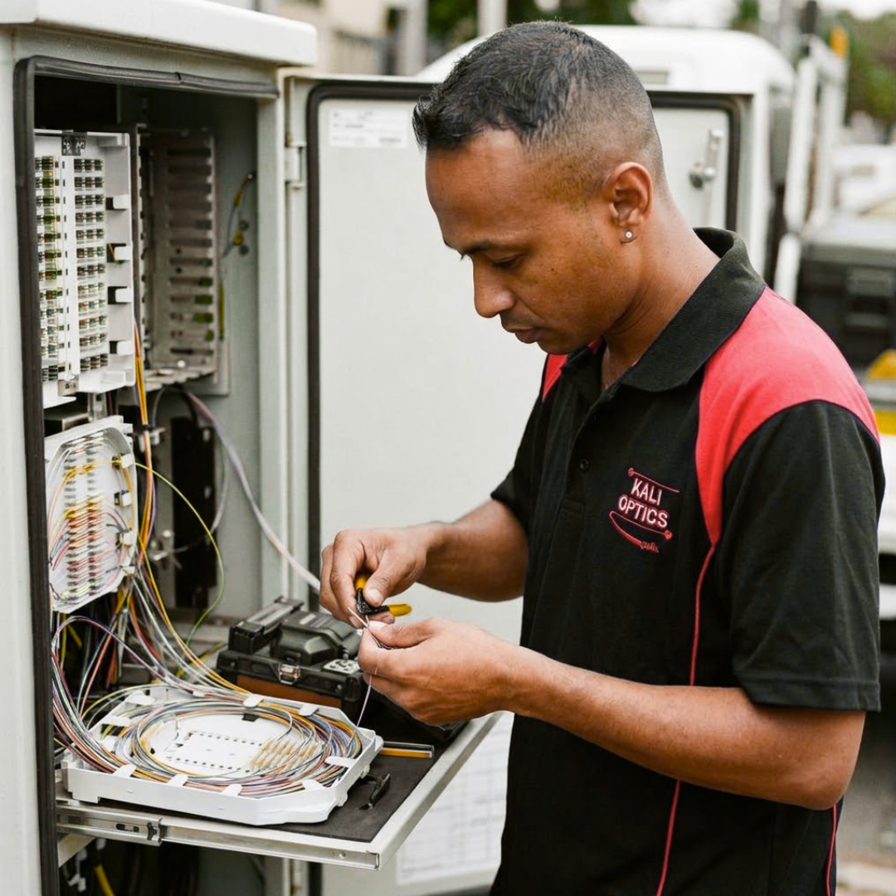
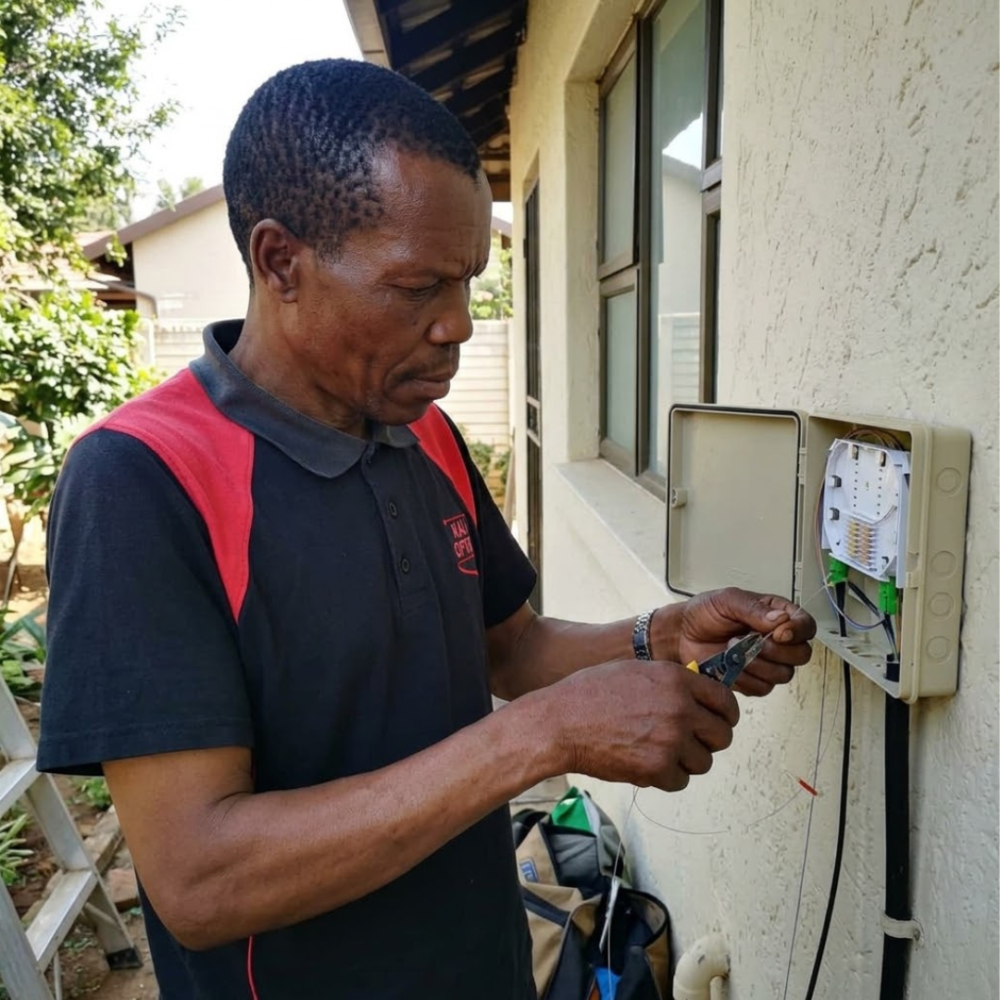
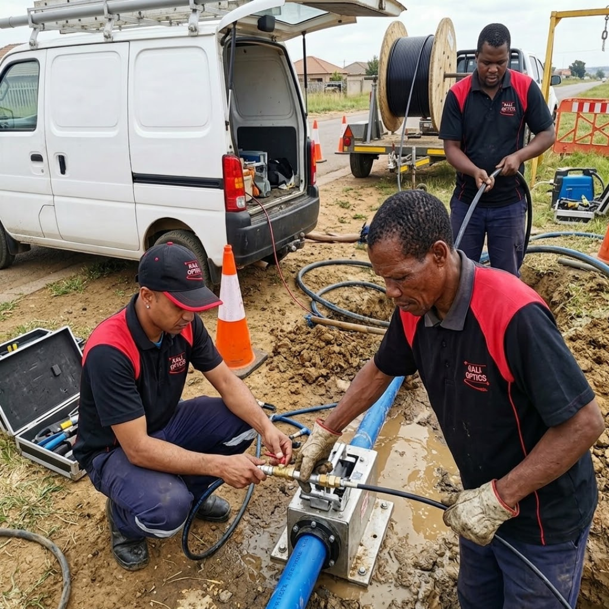
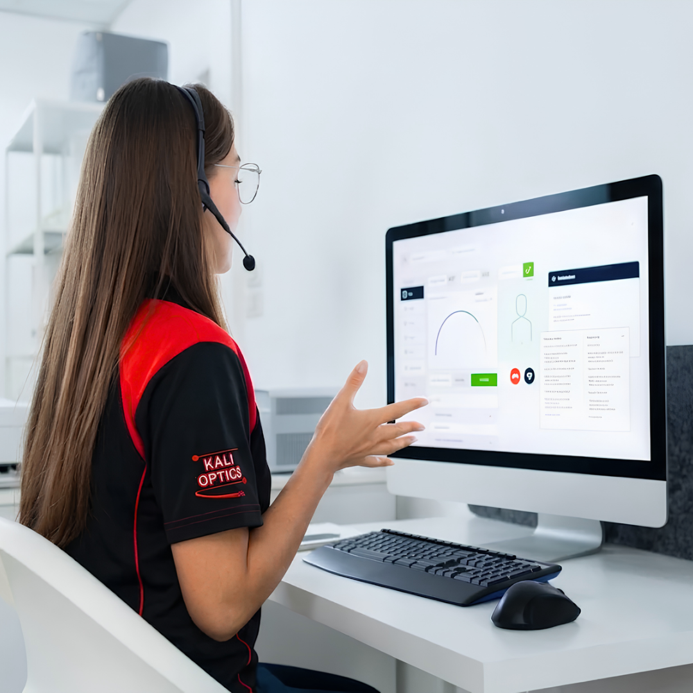

Services
FTTB - Fibre to the Business

Enterprise-grade connectivity engineered for commercial properties and office parks. We deploy robust, high-capacity fibre infrastructure that scales with corporate bandwidth demands, ensuring uncompromising stability for critical daily operations.
FTTH - Fibre to the Home
Large-scale residential fibre deployments designed for housing estates, complexes and new developments. We build reliable, high-speed networks that property developers and ISPs trust to deliver seamless neighbourhood connectivity.

Fibre Optic Floating & Civils

The heavy lifting of network deployment. Our specialized teams handle complete physical infrastructure builds. This includes everything from trenching and micro ducting to precision fibre floating, allowing us to execute complex groundwork with absolute technical precision.
Project Management
Comprehensive oversight for major network rollouts. We coordinate the entire lifecycle by managing site planning, contractor coordination and strict quality control to ensure your infrastructure is delivered on time and to exact specifications.
Maintenance & Support

Rapid-response network upkeep and fault resolution. We provide proactive infrastructure maintenance, precision splicing repairs and dedicated troubleshooting to guarantee long-term reliability and zero-compromise performance.